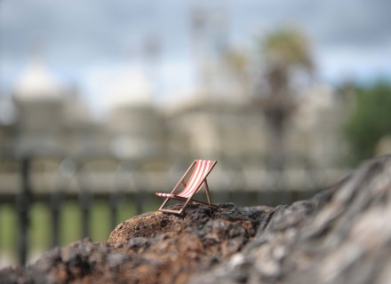
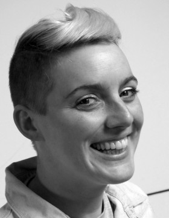

- 
-

Biography
Curious Space is a Brighton based design studio creating unique and inspiring spaces for museums, galleries, public spaces and performance.
Whether communicating a message in an exhibition or an emotion in a performance, our emphasis is on creating a powerful relationship between the audience and the created space. We design immersive and thought-provoking spaces which inspire a strong emotional response from the audience.
Anna and Patrick met on the Motley Theatre design course in 2003 and have been working together ever since. Over the years they have built a strong network of collaborators.

Patrick Burnier
Design and directionPatrick moved to London from Switzerland in 2003. As a child he dreamt of being an architect or a pilot, he went on to study anthropology and geography at university, diversified along the way and became a paragliding scenographer.
He likes to take on new challenges and gets the best out of those who work with him. His designs have been known to push the limits of engineering or at other times have been as simple as a chalk drawn circle! He won the Linbury Prize for Stage Design in 2005.
- 
Anna Jones
Design and directionPassionate about the performing arts, Anna studied drama at the University of Hull. During her time there she became inspired by scenography and has never looked back. Her design style is minimal and quirky. Her hands on experience of scenic painting have fed into her design bringing a strong eye for detail and exquisite finishes.
She thrives on working with people, inspiring and motivating her colleagues. Anna is renowned for her ever-changing radical haircuts and big smile.

Raphaël von Allmen
Design and 3D modellingAfter graduating from ECAL, the renowned school of art in Lausanne, Raphaël has travelled all around the world. Since returning he has developed his product design skills as well as collaborating with Patrick and Anna as a scenographer. From his studio in Switzerland, he shares the Brighton one via Skype and jumps in whenever his crazy 3D modelling skills are required.
Curious by nature, he’s fond of experiments of all kinds and is won’t stop working until he is happy with the result.
People
Selected Venues & Clients
- V&A
- National Railway Museum
- Hermes International
- Rayban
- MEN Musée d’Ethnographie de Neuchâtel
- Science Museum London
- UEFA (with Metazona)
- Royal Opera House (Linbury Studio)
- Young Vic
- Royal Court
- Roundhouse (Circusfest)
- ZKM Karlsruhe
- NIFFF (Neuchâtel International Fantasy Film Festival)
- Musée de la Vie Wallone Liège
- The Royal Conservatoire of Scotland
- The Village Underground
- Sadler’s Wells
- Athénée théâtre Louis-Jouvet Paris
- Nouveau Parc animalier La Garenne